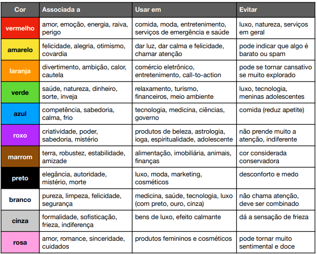

É importante aprender a usar o significado de tal elemento favoravelmente para a transmissão de informações. Ou seja, é preciso que as marcas tenham total consciência desses fatores para que seja possível conquistar seus objetivos de marketing.

Aqui nessa imagem temos outras indicações de cores
Vou deixar alguns links para apoio :